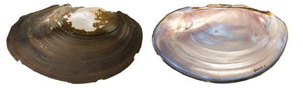

Potamilus amphichaenus (Frierson, 1898)
Texas Heelsplitter

Potamilus amphichaenus –Neches River [Neches River drainage], length 124.0 mm.
Identification
Shell structure: thin, brittle, and subinflated.
Shell outline: elliptical to oblong oval, may have a small, conspicuous, dorsal wing, which can be missing due to erosion or breakage.
Posterior ridge: full and rounded.
Shell color: dark brown to black and lighter on the umbo.
Rays: may present faint green or black rays; surface glossy.
Shell texture: without sculpture.
Umbo: low, moderately broad, elevated slightly above the hinge line; umbo cavity shallow.
Umbo sculpture: absent or faint ridges.
Pseudocardinal teeth: triangular, thin, compressed, sharp, 2 in the left valve, but posterior tooth may be missing, 1 tooth in the right valve.
Lateral teeth: relatively short, thin, straight to slightly curved, 2 in left valve, 1 in right valve.
Interdentum: moderately long and narrow to almost absent.
Nacre: white, bluish-white or purple; somewhat clouded to iridescent throughout.
Other: sexually dimorphic but often difficult to separate, females tend to be inflated at the posterior base and have a more rounded posterior margin than males.
General Range
Gulf Coastal drainages of east Texas and western Louisiana.
Habitat
Medium-sized streams to large rivers, may occur in some reservoirs. In riverine habitats, often found in nearshore habitats such banks and backwater pools. Occurs in standing to slow-flowing water, in soft substrates such as mud, silt or sand.
Legal listing status
USFWS: Under Review